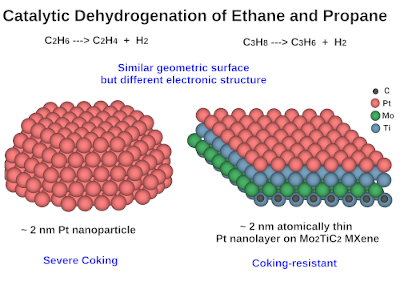

News
April 2024:
• Congratulations to Tobias Misicko on receiving the College's graduate research award!
• Congratulations to Caroline Cresap, an undergraduate researcher in the group, on receiving a $5,000 SURE (Supervised Undergraduate Research Experience) grant from NSF EPSCOR to conduct a Machine Learning investigation of catalyst design.
March 2024:
• The Xiao Group receives Transportation Innovation for Research Exploration (TIRE) grant sponsored by Louisiana Transportation Research Center (LTRC) for a project to convert methane to ethanol fuel via photo-thermo catalysis.
• Welcome three graduate students to the Xiao Research Group: Joaquin Herrero is a PhD student, who obtained his B.S. in Chemical Engineering from Purdue University, West Lafayette, Indiana, U.S.A. Mantasha Noyela is a PhD student, who obtained her B.S. in Computer Science from Daffodil International University, Dhaka, Bangladesh. Thapaswi Movva is a Master's student, who obtained her B.S. in Computer Science from Jawaharlal Nehru Technological University, Hyderabad, India.
• Dr. Xiao is organizing the "Catalysis on Low Dimensional Materials" session at the 2024 AIChE (American Institute of Chemical Engineers) Annual Meeting in San Diego, CA. We seek submissions on single-atom catalysis, and 2D catalysis such as MXene, MOF, COF, etc. Please check it here.
• The Xiao Group will present a poster on the catalytic conversion of short alkanes at the ACS Spring 2024 Conference, Tuesday, March 19, 2024, 7:00 PM - 9:00 PM, Hall C - Ernest N. Morial Convention Center, New Orleans, Louisiana.February 2024:
• The Xiao Group received a COES RED Travel Grant.
January 2024:
• The Xiao Group received subsistence funds from the Louisiana Board of Regents to support a Ph.D. student to visit Oak Ridge National Laboratory for eight weeks.
• In collaboration with Dr. Cao from Zhejiang University, our paper entitled "A Kinetic Model of the Cycloaddition Reactions Between Cyclopentadiene and 1, 3-Butadiene for Synthesis of 5-vinyl-2-norbornene" is published in The Canadian Journal of Chemical Engineering. Check it HERE.

November 2023:
Dr. Xiao will chair the session of "Catalysis on Low Dimensional Materials" at the 2023 AIChE Annual Meeting on Sunday, November 5, 2023, 3:30 PM - 6:00 PM, Plaza International Ballroom J (Convention Level, Hyatt Regency Orlando) in Orlando, FL. Check the Agenda .
October 2023:
Dr. Xiao gave a talk at the Energy Transition Research Symposium on 10/6/2023 at LSU Energy, Coast & Environment Bldg. (93 S. Quad Drive, Baton Rouge, LA 70803), entitled: "Environmentally Sustainable Carbon-Free Hydrogen Generation by Catalytic Dehydrogenation of Short Alkanes". Check the Agenda .
September 2023:
We welcome Caroline Cresap to join the group as an undergraduate research assistant!
We welcome Piper Smith to join the group as an undergraduate research assistant!
Our paper is accepted by LSU's Energy Transition Research Symposium. Dr. Xiao will give a presentation of hydrogen generation on 10/6/2023 at LSU Energy, Coast & Environment Bldg. (93 S. Quad Drive, Baton Rouge, LA 70803). Check more info here.
August 2023:
Our paper "Two-dimensional Atomically Thin Pt Layers on MXenes: The Role of Electronic Effects During Catalytic Dehydrogenation of Ethane and Propane" is published in the journal of Nano Research, DOI: 10.1007/s12274-023-6022-2 Link

July 2023:
Great News! We received the Research Enhancement Award (REA) grant from The Louisiana Space Consortium (LaSPACE), a NASA EPSCoR Program.
June 2023:
Welcome two high school students research assistants Mir Ali and Piper Smith joining the group.
During the 27th International Symposium for Chemical Reaction Engineering (ISCRE27) in Québec City, Québec in Canada on June 11-14, 2023, Dr. Xiao gave an oral talk: "Atomically Thin Platinum Nanolayers on MXene for Catalytic Non-oxidative Coupling of Methane".
March 2023:
Welcome Henrik Ketting joining the group as a graduate research assistant! Welcome Sarah Siharath and Robert Martin joining the group as undergraduate research assistants!
February 2023:
A collaborative paper entitled " Hollow macroporous CeO2/β-Bi2O3 heterostructure sphere via one-step spray solution combustion synthesis for efficient photocatalysis" is published in the journal of Applied Surface Science, DOI: 10.1016/j.apsusc.2023.156718, Link

Dr. Xiao, along with two colleagues, is organizing the "Catalysis on Low Dimensional Materials" session at the 2023 AIChE (American Institute of Chemical Engineers) Annual Meeting in Orlando, FL. We seek submissions on single-atom catalysis, and 2D catalysis such as MXene, MOF, COF, etc. Please check out more info here.
The Xiao Group members, including Tobias K. Misicko, Xiaoyang Gao, and Dr. Xiao, will present research at Southeastern Catalysis Society (SECS) in Tuscaloosa, AL on February 27-28, 2023.
January 2023:
Dr. Xiao will give a Nanoseminar in the IfM auditorium of Louisiana Tech University at 4 pm on Wednesday, 1/11/2023 - "Atomically Thin Nanolayer Materials for the Catalytic Activation of Short Alkanes".
The Xiao Group receives the Research and Economic Development Travel Grant and IfM Research Innovation Initiative Grant.
December 2022:
Dr. Xiao's one more U.S patent (No. 11,524,279) has been granted - Transition metal carbides for catalytic methane activation. Please check the patent here, and the related article here.
In collaboration with Dr. Yue Wu (Iowa State University) and Dr. Shuai Zhang (University of Washington), Dr. Xiao is organizing a Special Issue in the journal of Catalysts on "Advances in Catalytic Methane Activation". All research directions on methane activation, including oxidative coupling of methane (OCM), nonoxidative coupling of methane (NOCM), methane selective oxidation to methanol or other C1 or C2 oxygenates (HCHO, HCOOH, and CH3COOH, etc.), are welcome to submit. Please find more info here.
Welcome Jacob Christ to join the group as an undergraduate research assistant.
November 2022:
Dr. Xiao gave two talks on methane activation and bio-oil upgrading, and co-chaired a catalysis session at the 2022 AIChE Annual Meeting in Phoenix, AZ, November 13-18, 2022. More info is available here.
Dr. Xiao's latest patent on bio-oil upgrading has been filed and published. The versions of U.S. patent and W.O. patent can be found via the following links. U.S. version and W.O. version.
September 2022:
Welcome two undergraduate research assistants join the group - Brady Duplessis and Paul Macip.
August 2022:
Dr. Xiao will co-chair the session of "Fundamentals of Catalysis and Surface Science II: Zeolites and acid catalysis" at the 2022 AIChE Annual Meeting in Phoenix, AZ. The session is at 1:30 PM - 4:00 PM on Monday, November 14, 2022 at Phoenix Convention Center - N-128B. Please check more info at here.
July 2022:
The abstract, Guaiacol Hydrodeoxygenation and Hydrogenation over Bimetallic Pt-M (Nb, W, Zr)/KIT-6 Catalysts with Tunable Acidity, has been accepted for oral presentation at the 2022 AIChE Annual Meeting in Phoenix, AZ. Dr. Xiao will present it at the session of Biomass Conversion I: Hydrodeoxygenation, 9:12 AM MST - 9:30 AM MST on Wednesday, November 16, 2022 in Phoenix Convention Center, N-128A. Please check more info at here.
The abstract, Nonoxidation Coupling of Methane over Nano-Layer Platinum Catalysts on Two-Dimensional Metal Carbides (MXenes), has been accepted for oral presentation at the 2022 AIChE Annual Meeting in Phoenix, AZ. Dr. Xiao will present it at the session of Hydrocarbon Conversion I: Nonoxidative processes for hydrocarbon conversion, 9:36 AM MST - 9:54 AM MST on Friday, November 18, 2022 in Phoenix Convention Center, N-127A. Please check more info at here.
June 2022:
Dr. Xiao joined the Topical Advisory Panel for the journal of Catalysts. He will regularly review manuscripts and set up one Special Issue (SI) for the journal.
Dr. Xiao will be presenting a poster entitled "A New Elective Course at Louisiana Tech University: Sustainable Chemical Processes" at ASEE/AIChE Summer School for Engineering Faculty at Colorado School of Mines, Golden, CO during the week of July 24-29, 2022. Please check more info at here.
Mr. Tobias K. Misicko has officially joined the Xiao Group as a graduate student.He receives B.S. in Chemical Engineering from Purdue University. He will be working on catalytic methane activation. Welcome to the group.
April 2022:
Glad to know a technology for converting glycerol to fuels that I developed at Purdue is chosen as one of the ten green-related innovations by Purdue University for April 22 - Earth Day. Please find the news link here. Please also find more info of the technology here.
Dr. Xiao's paper entitled "Guaiacol Hydrodeoxygenation and Hydrogenation over Bimetallic Pt-M (Nb, W, Zr)/KIT-6 Catalysts with Tunable Acidity" has been published online in the journal of ACS Sustainable Chemistry & Engineering (DOI: 10.1021/acssuschemeng.1c07071). Please find the paper link here. "It is a pleasure to be invited to contribute to this Festschrift honoring Professor James Dumesic, whose impactful contributions to the fields of catalysis and biomass processing we greatly admire"
Please check a paper on solution combustion synthesis from my collaborator entitled "One-step solution combustion synthesis of micro/nano-scale porous Cu/CeO2 with enhanced photocatalytic properties" in the journal of Journal of Rare Earths (DOI: 10.1016/j.jre.2022.02.013). Please find the paper link here.
March 2022:
I am thrilled to officially join the faculty of Louisiana Tech University as a tenure-track assistant professor of chemical engineering on March 1st, 2022.
January 2022:
I am in transition to Louisiana Tech University. Please use my new email: yxiao@latech.edu to contact me. My research group has two positions of fully-funded Ph.D. students. If you are interested in joining my Catalysis Science and Reaction Engineering Group, please send me an email with your CV/resume. check my profile at Tech.
December 2021:
I am invited to give a virtual talk "Catalytic CO2 Hydrogenation to Value-Added Chemicals and Fuels at the interface of Metal-Oxide" at the 2021 IEEE Sustainable Power and Energy Conference (iSPEC 2021, Nanjing, China). here.
My patent "Catalytic Non-Oxidative Catalytic Conversion of Methane to Hydrocarbons" disclosure is being licensed by Swift Fuels LLC.
My research is highlighted in Purdue's News Release - "ChE research invents revolutionary catalysts for methane activation; Discovery could advance natural gas/shale gas utilization, reduce methane emissions, and ease climate change". Please find a link: here.
November 2021:
I am excited to accept the offer of a tenure-track Assistant Professor of Chemical Engineering within the College of Engineering and Science (COES) in Louisiana Tech University (LATech). I will be establishing the Xiao Research Group of Reaction Engineering and Catalysis Science there. I am looking for graduate students to join my research group at LATech.
October 2021:
Our paper entitled "Direct Methane Activation by Atomically Thin Platinum Nanolayers on Two-Dimensional Metal Carbides" has been published online in the journal of Nature Catalysis. (Nature Catalysis, VOL 4, October 2021, 882-891) Please find the paper link here. Please also find a sharable link here. If you need a pdf copy, please contact me via yxiao@latech.edu.
August 2021:
I am excited to be the instructor of a core chemical engineering course: ChE378 Heat and Mass Transfer with 74 students enrollment.
June 2021:
Great News! My paper on methane activation is in principle accepted by the journal of Nature Catalysis. More update soon.
Our paper entitled "One-Step Combustion Synthesis of Carbon-Coated NiO/Ni Composites for Lithium and Sodium Storage" has been accepted in the Journal of Alloys and Compounds. Please find the paper link here.
May 2021:
Congratulations to Pratik Potdar, an alumnus working in the group, who has accepted the offer of the M.S. program at Columbia University with a specialization in Data and Computational Science. Wish he does great here!
April 2021:
Congratulations to Zihao Meng, an alumnus working in the group, who has accepted the offer of Ph.D. program at the University of Houston. Wish he do great here!
March 2021:
Our collaborative paper entitled "Low-pressure hydrothermal processing of mixed polyolefin wastes into clean fuels" has been accepted in the journal of Fuel. Please find the paper link here.
Jan. 2021:
My paper entitled "Hydrogenolysis of glycerol to propanediols over silicotungstic acid catalysts intercalated with CuZnFe hydrotalcite-like compounds" has been accepted in the journal of Catalysis Today. Please find the paper link here.
I am glad to host three virtual sessions with Dr. Zhenglong Li from Oak Ridge National Laboratory (ORNL) and Prof. Mingzhou Jin from University of Tennessee, Knoxville (UTK) regarding process modeling using Aspen plus software packages. I hope that we can develop more collabative opportunities.
Nov. 2020:
Pleasure to co-chair a session "Fundamentals and Strategies for Catalytic Biomass Conversion at 2020 Virtual AIChE Annual Meeting"
Sept. 2020:
Our collaborative paper entitled "Imidazolium ionic liquid functionalized UiO-66-NH2 as highly efficient catalysts for chemical fixation of CO2 into cyclic carbonates" has been accepted in the journal of Microporous and Mesoporous Materials. Please find the paper link here.
August 2020:
One of our publications (Refinement of the kinetic model for guaiacol hydrodeoxygenation over platinum catalysts, AIChE Journal, 2020, Vol. 66, Issue 5, e16913) is reported and highlighted in Advances in Engineering (AIE), the World's leading source of Engineering research news. Please find the report link here.
July 2020:
Our collaborative paper entitled "Ordered Mesoporous Ag/CeO2 Nanocrystalline via Silica-templated Solution Combustion for Enhanced Photocatalytic Performance" has been accepted in the journal of Colloids and Surfaces A: Physicochemical and Engineering Aspects. Please find the paper link here.
June 2020:
Excited to announce that my lab (FRNY2016) is reopening as the SOP has been officially approved by Purdue COVID Research Space Team.
Welcome to submit Research Articles, Reviews to a Special Issue where I serve as the Guest Editor - Advances in Catalysis and Materials Sciences for Alternative Fuels and Chemicals in IJCMSSE (International Journal of Computational Materials Science and Surface Engineering). Please find more info here. Please feel free to contact me at xiao63@purdue.edu if you have any questions regarding the Special Issue.
May 2020:
Great to learn that my patent application on glycerol conversion to fuels has been approved. Thanks a lot to Purdue Research Foundation's help. Link. Please also see the two related papers below. ACS Energy Lett. 2016, 1, 5, 963–968. AIChE Journal 63 (12), 5445-5451.
April 2020:
I will be very happy to co-chair a session at this year's AIChE meeting in San Francisco, CA - the session name is Fundamentals and Strategies for Catalytic Conversion of Biomass
March 2020:
It was challenging to co-chair the Catalysis and Reaction Engineering session at AIChE Midwest Regional Conference during the pandemic in Chicago on March 11, 2020. It was my pleasure that the session was successful. Hope everyone is safe!! Link.
February 2020:
Glad to know that my paper on CO2 hydrogenation has been accepted as an ORAL presentation at ICC2020 - the 17th International Congress On Catalysis in San Diego, CA, Sunday, June 14, 2020 - Friday, June 14-19, 2020, Manchester Grand Hyatt Hotel. This Congress has been held every FOUR years under the auspices of the International Association of Catalysis Societies since its first meeting in Philadelphia in 1956. Hope see you there! More info at here
My honor to co-chair the Catalysis and Reaction Engineering session at AIChE Midwest Regional Conference, 9:45 AM – 11:30 AM, Wednesday, March 11, 2020 (Alumni Lounge, WeA1), Illinois Institute of Technology (Hermann Hall), Chicago, IL. Hope see you there! More info at here Link.
January 2020: My paper "Refinement of the kinetic model for guaiacol hydrodeoxygenation over platinum catalysts" has been accepted by AIChE Journal
(Link).
I am happy to be the lead author as well as correspoding author! Thank you all co-authors!
December 2019: I am pleased to get a promotion
to the new position at Purdue - "Senior Research Engineer". My role is to manage complex research projects; communicate research findings with
internal and external partners and collaborators; implement IP policy for the project; and supervise graduate and undergraduate students.
November 2019:
My paper "Refinement of the kinetic model for guaiacol hydrodeoxygenation over platinum catalysts" has been accepted by AIChE Journal (Link). I am happy to be the lead author as well as correspoding author! Thank you all co-authors!
December 2019: I am pleased to get a promotion
to the new position at Purdue - "Senior Research Engineer". My role is to manage complex research projects; communicate research findings with
internal and external partners and collaborators; implement IP policy for the project; and supervise graduate and undergraduate students.
November 2019:
I am pleased to get a promotion to the new position at Purdue - "Senior Research Engineer". My role is to manage complex research projects; communicate research findings with internal and external partners and collaborators; implement IP policy for the project; and supervise graduate and undergraduate students.
November 2019:
Two papers were presented at 2019 AIChE Annual Meeting in Orlando, FL, including "Parametric Sensitivity and Runaway in Fixed-Bed Reactors: Example of Methanol Selective Oxidation over Pt-Bi Catalysts" (Link), and "Enhanced Aromatic Selectivity during Deoxygenation of Phenolic Model Compounds over Bifunctional Catalysts" (Link)
Our joint provisional patent with Iowa State University has been filed, which focuses on nonoxidative coupling of methane, similar to our prior approved patent (Link).
October 2019:
It is my honor to present our recent research projects at the Varma Memorial Symposium; Great to meet many academic brothers and sisters from either Purdue University or University of Notre Dame.
Our patent application on producing hydrocarbons from methane is granted! Congrats to ourselves! See details here.
June 2019:
I am happy to present our collaborative work with Prof. Bala Subramaniam group from University of Kansas at NAM26 - 2019 North American Catalysis Society Meeting in Chicago, IL.
May 2019:
I am happy to present our collaborative work with Prof. Bala Subramaniam group from University of Kansas at NAM26 - 2019 North American Catalysis Society Meeting in Chicago, IL.
May 2019:
Our joint provisional patent with University of Kansas has been filed, which focuses on bio-oil upgrading, similar to our prior approved patent (Link).
April 2019:
Great News! We received a notice of allowance for our provisional patent on converting methanol to formaldehyde under low temperatures
(Link).
All claims are allowed at the very first examination.
We filed the application in December, 2018.
Within 4 months, this is a first action allowance!
Our professional patent attorney is not aware of
such a happening in 4 months for himself or not for any attorney he knows with no rejections what so ever.
The claims are reasonably broad!
March 2019:
Great News! We received a notice of allowance for our provisional patent on converting methanol to formaldehyde under low temperatures (Link). All claims are allowed at the very first examination. We filed the application in December, 2018. Within 4 months, this is a first action allowance! Our professional patent attorney is not aware of such a happening in 4 months for himself or not for any attorney he knows with no rejections what so ever. The claims are reasonably broad!
March 2019:
My very first paper where I serve as the correspoding author is accepted by Chinese Journal of Chemical Engineering - "Sustainable value-added C3 chemicals from glycerol transformations: A mini review for heterogeneous catalytic processes" (Link).
It is my honor to present a paper in the session to celebrate Prof. Dan Luss contributions to the field of chemical reaction engineering at The 4th North American Symposium for Chemical Reaction Engineering (NASCRE 4): "A Mechanistic Study of Glycerol Conversion to Aromatic Hydrocarbons over Bifunctional Metal-Supported H-ZSM-5 Catalysts" Houston, Texas.
Our collaborative paper with Prof. van Bokhoven group is accepted by ACS Catalysis, "Role of Bismuth in the Stability of Pt–Bi Bimetallic Catalyst for Methane Mediated Deoxygenation of Guaiacol, an APXPS Study"
(Link).
February 2019:
Great news! Our proposed project "Catalyst design and reactor runaway: selective oxidation of alcohols" has been funded by P2SAC (Purdue Process Safety & Assurance Center) .
January 2019:
A paper in collaboration with Prof. Jeff Miller group is accepted by the journal Catalysis Science and Techology - "Identification of the structure of the Bi promoted Pt non-oxidative coupling of methane catalyst: a nanoscale Pt3Bi intermetallic alloy" (Link). This is one more paper to address the power of our excellent Pt-Bi catalysts!
December 2018:
I gave a presentation at P2SAC (Purdue Process Safety & Assurance Center) 2018 Fall Conference at Purdue University, West Lafayette, IN - "Catalyst Design and Reactor Runaway: Selective oxidation of alcohols".
November 2018:
It is my honor to present a paper in the session to celebrate Prof. Doraiswami Ramkrishna contributions to the field of chemical reaction engineering at 2018 AIChE Annual Meeting "Bio-Oil Upgrading Using Methane: A Mechanistic Study of Model Com- pound Guaiacol Reactions over Pt-Bi Bimetallic Catalysts" Pittsburgh, Pennsylvania.
Two papers are presented at 2018 AIChE Annual Meeting in Pittsburgh, Pennsylvania - "Methanol Conversion to Formaldehyde at Low Temperatures over Pt-Bi Bimetallic Catalysts", and "Selective Nonoxidative Coupling of Methane (NOCM) over Pt-Bi Bimetallic Catalysts".
October 2018:
My third paper on bio-oil upgrading using methane as hydrogen donor is accepted by the journal ACS Sustainable Chemistry and Engineering - Bio-Oil Upgrading Using Methane: A Mechanistic Study of Reactions of Model Compound Guaiacol over Pt-Bi Bimetallic Catalysts (Link). Interestingly, it appears "Received: September 25, 2018; Published: October 23, 2018", sounding like no revision required. Great news!
Our collaborative paper with Prof. Xiaohong Wang group from China University of Mining and Technology is accepted by the journal CrystEngComm (Link). Hope that we will engage more collaboration with her group!
May 2018:
I did a presentation on methane activation at the Catalysis Club of Chicago Spring Symposium, Chicago, Illinois.
I presented a poster on Low-Temperature Selective Oxidation of Methanol to Formaldehyde at the 39th Annual Michigan Catalysis Society Spring Symposium, Midland, Michigan.
April 2018:
My paper on methanol oxidation is accepted by Journal of Catalysis, a premier scholarly publication in the field of catalysis - Low-temperature selective oxidation of methanol over Pt-Bi bimetallic catalysts (Link). Congrats to myself for lead authoring the first paper in Journal of Catalysis!
A undergraduate student under my mentor - Ms Lindsey Blanshan did a presentation at the AIChE North Central Regional Conference, West Lafayette, IN.
February 2018: